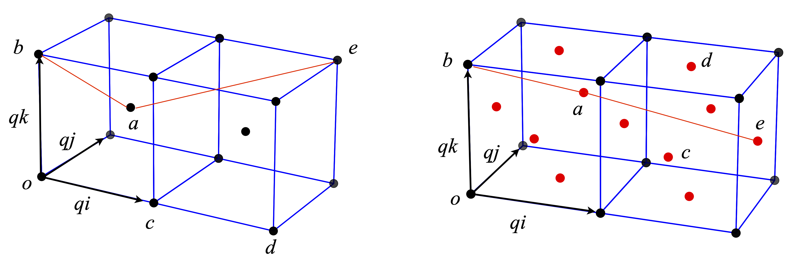

Questions 25 - 32
Contents
Questions 25 - 32#
%matplotlib inline
from mpl_toolkits.mplot3d import Axes3D
import matplotlib.pyplot as plt
import numpy as np
plt.rcParams.update({'font.size': 16}) # set font size for plots
Q25 Unit vectors#
Two unit vectors, \(\vec a\) and \(\vec b\) in the \(x-y\) plane, make angles \(\alpha\) and \(\beta\) with the x-axis respectively.
(a) Show that \(\vec a = \cos(\alpha)\boldsymbol i + \sin(\alpha)\boldsymbol j\) and \(\vec b = \cos(\beta )\boldsymbol i + \sin(\beta)\boldsymbol j\) and then by calculating \(\vec a\cdot\vec b\) find the trigonometric formulae for \(\cos(\alpha - \beta)\).
Start with angles \(\alpha\) and \(\beta\) in the first quadrant \(0 \to \pi/2\), and then make \(\beta\) negative in the range \(0 \to -\pi/2\).
(b) Find \(\cos(\alpha + \beta)\).
(c) Repeat the dot product calculation in matrix form.
Strategy: Draw out the vector diagram using only the first quadrant, as this makes the calculation easier. Label the diagram and add the projections on to the axes. Calculate the dot product in two ways, one in terms of vector components and the other from the angle between the vectors.
Q26 Orbitals#
The 2s and three 2p orbitals in a one electron atom, such as hydrogen, are degenerate in energy if all angular momentum is ignored. The basis set orbitals for the angular component of the 2p wavefunctions are, \(\psi_{2p_{-1}},\psi_{2p_0},\psi_{2p_{+1}}\) where the \(0\) and \(\pm 1\) represent the \(m\) quantum numbers. These orbitals are orthogonal because they are the eigenvectors of the Schroedinger equation and we assume that they are normalized. Mathematically, these orbitals are spherical harmonic polynomials.
In the \(\psi_{2p_{-1}},\psi_{2p_0},\psi_{2p_{+1}}\) form, the \(\pm 1\) orbitals cannot be plotted as they contain complex numbers and instead, linear combinations are made which are called \(\psi_{2p_x}\) and \(\psi_{2p_y}\) and which point in the \(x\) and \(y\) directions respectively. The \(2p_0\) orbital is real and a linear combination is not necessary and points in the \(z\) direction \(\psi_{2p_z} \equiv \psi_{2p_0}\) . The \(x, y,\) and \(z\) orbitals have the familiar double lobed p orbital shape.
(a) Show that the orbitals
are orthogonal and normalised. (\(i=\sqrt{-1}\)).
(b) Are the hybrid orbitals
orthogonal with each other or with the \(2p_x\) and \(2p_y\) orbitals? (\(ψ_{2s}\) is the \(2s\) orbital which is normalized and orthogonal to each \(2p\) orbital).
(c) Are the hybrid orbitals
orthogonal to one another and with the 2px, 2px, and 2py orbitals?
(d) Plot the angular parts of the px, py and pz and the sp2 hybrid orbitals. The basis set wavefunctions angular functions are \(\displaystyle \psi_{2p_0}=\sqrt{3/4\pi}\cos(\theta),\; \psi_{2p_{\pm 1}}=\sqrt{3/8\pi}\sin(\theta)e^{\pm i\varphi}\). The angular part of the s orbital is \(\psi_s = 1/ 4\pi\). You should plot the absolute value of the function, because some wavefunctions can contain complex numbers.
(e) Show, by direct integration, that the \(\displaystyle \psi_{2p_{0,\pm 1}}\) wavefunctions are orthogonal and normalized.
Strategy: (a-c) Treat the orbitals as vectors in the \(0, \pm 1\) orbital basis set. If these are orthonormal, the dot product of any base vector with itself will be unity and with any other vector, it will be zero. In matrix vector form, the base vectors can be written as
(e) In the integration, check for normalization and orthogonality. In symbolic form, \(\int \psi^*_m\psi_n d\tau = \delta_{n,m}\). Recall that in polar coordinates a volume element is necessary when integrating, see Chapter 4.7 and 4.11. The polar angle varies from \(0 \to \pi\) and the azimuthal from \(0 \to 2\pi\).
The python code below shows how to plot in 3D.
fig = plt.figure(figsize = plt.figaspect(1)) # Square figure
ax0 = fig.add_subplot(111, projection='3d') # get 3d plotting
theta0 = np.linspace(0,np.pi,50) # define angles
phi0 = np.linspace(0,2*np.pi,50)
theta, phi = np.meshgrid(theta0,phi0) # get a grid of points to plot
xyz = np.array([np.sin(theta)*np.sin(phi),np.sin(theta)*np.cos(phi),np.cos(theta)]) # array of values
#----------------------------
def orbital():
psi2s = 1/np.sqrt(4*np.pi) # s orbital, add other orbitals here
return np.abs(psi2s)*xyz # chnage this to return any new orbital you want to ploy
#-----------------------------
X,Y,Z = orbital()
ax0.plot_surface(X,Y,Z, rstride=2,cstride=2 ,cmap = 'jet')
plt.show()
Q27 Angle between orbitals#
Show that (a) the orbitals represented by \(\displaystyle \psi_1 = \frac{1}{2}(\psi_s + \psi_{px} + \psi_{py} + \psi_{pz})\) and \(\displaystyle \frac{1}{2}(\psi_s + \psi_{px} - \psi_{py} - \psi_{pz})\) are orthogonal and (b) the angle between the orbitals is \(\approx 109^\text{o}\). Assume that the \(s, px, py\), and \(pz\) orbitals are orthogonal.
Strategy: If the vectors are three dimensional, the cosine of the angle found from the dot product has some meaning. In four or higher dimensional vectors, the dot product still produces the cosine of an angle although this angle does not have any geometric meaning; instead, if the cosine is zero the vectors are orthogonal and one if parallel. Because the s orbital is spherically symmetrical, it cannot contribute to the orbital’s direction and can be ignored. Form a basis set out of the four s and p orbitals, as they are orthogonal.
Q28 Hybrid orbital#
An \(sp^n\) hybrid orbital may be written as a linear combination of atomic orbitals (LCAO) \(\displaystyle \psi = a\psi_s + b\psi_{px} + c\psi_{py} + d\psi_{pz}\) where, \(a, b, c, d\) are the amounts of the respective s and p atomic orbitals \(\psi_s\) and \(\psi_p\), and \(n\) can be \(1, 2\), or \(3\) depending upon the type of hybrid.
(a) Find the angles between normalized orbitals represented by
Assume that the \(s, px\), and \(p\)y orbitals are orthogonal.
(b) What hybridization does your answer imply?
(c) In (a) we assumed that the orbitals were orthogonal, prove this repeating (a) using the definitions of \(\psi_{2px}\) and \(\psi_{2py}\) given in Q26 using a basis set of \(s, p_0, p_{\pm 1}\) orbitals.
(d) The basis set orbitals \(s, p_0, p_{+1}, p_{-1}\) each have a set of well-defined quantum numbers. The principal quantum number is \(1, 2, 3\cdots\) for s orbitals, \(2, 3, 4, \cdots\) for p orbitals, \(3, 4, 5\cdots\) for d orbitals, and so forth. The orbital angular momentum is \(\ell = 0\) for s orbitals, \(\ell = 1\) for p orbitals, and \(2\) for d orbitals. The projection or magnetic quantum numbers \(m\) are limited to \(\pm l\) and integer values in between, and are \(0\) and \(\pm 1\) for p orbitals. The electron has a quantum number of \(S = 1/2\) and projection quantum numbers of \(m_s = \pm 1/2\). When hybrid orbitals such as \(p_x\), and \(p_y\) are formed, some quantum numbers may not be defined. Make a table of the quantum numbers of the basis set, and \(p_x, p_y, p_z\), and \(\psi_1\) and \(\psi_2\) orbitals.
Strategy: Think about the geometry of the s and p orbitals and more particularly the directions in which they can point. Relate \(\psi\) to \(\psi_1\) and \(\psi_2\) using the \(\boldsymbol{i, j, k}\) basis set vectors.
Q29 Body and face centred unit cells#
Some atoms are shown in Fig. 6.19 positioned in the arrangement of the body-centred and face-centred unit cells. The length of one side of the unit cell is \(q\).
(a) Using the vectors shown, calculate the distances from atom \(a\) to \(b, c, d\), and \(e\) and the angles (i) \(bac\), (ii) \(bad\), and (iii) \(bae\). The atom labelled \(a\) in the body-centred cell (left) is described by the vector \(\displaystyle \frac{q}{2}(i+j+k)\), and the atom a in the rear of the face-centred cube at \(\displaystyle{q}{2}(i+2j+k)\), where \(i,j,k\) form an orthonormal set of vectors.
(b) Use python if necessary to do a similar calculation on the face-centred cell. In this calculation, it will be easier to convert from the \(i, j, k\) to matrix vector method.
Strategy: First, work out the coordinates of the points and then the vectors from the origin O. As \(q\) is a common factor to all the coordinates, it is easier to work by defining its numerical value to be 1 and finally multiply distances by \(q\).

Figure 19. Body-centred (left) and face-centred cubes. The angle \(bae\) is shown with red lines. The face centres atoms are shown in red.
Q30 Derive equation 17.#
Q31 Vector calculation#
Find \(\vec A + \vec B, | \vec A |, | \vec B |, \vec A\cdot \vec B\) and \(\cos(\theta)\) for the following vectors:
(a) \(\vec A=\boldsymbol{i}-\boldsymbol{j}+\boldsymbol{k} \quad \vec B=\boldsymbol{i} +3\boldsymbol{j} +5\boldsymbol{k}\)
(b) \(\vec A=3\boldsymbol{i}+\boldsymbol{j}+4\boldsymbol{k} \quad \vec B=2\boldsymbol{i} -5\boldsymbol{j}+ 3\boldsymbol{k}\)
(c) \(\vec A=\boldsymbol{i}+\boldsymbol{j} \quad \vec B=\boldsymbol{i} +\boldsymbol{k}\)
Q32 Dipole moments#
The dipole moments of a molecule may be constructed, at least approximately, from the vectorial sum of individual bond dipole moments which are tabulated. Using the values in the table, calculate the dipole moments for (a) meta-dichloro-benzene, (b) methylene chloride, and (c) chloroform.
Bond dipole moments are given in units of debye, see Weast (‘Handbook of Chemistry & Physics’ CRC press) for values for other bonds. A positive value means the dipole direction is towards its positive end and to the right-hand atom of the pair. (The bond angle in tetrahedral molecules is \(\cos^{-1}(-1/3) = 109.47^\text{o}\).)